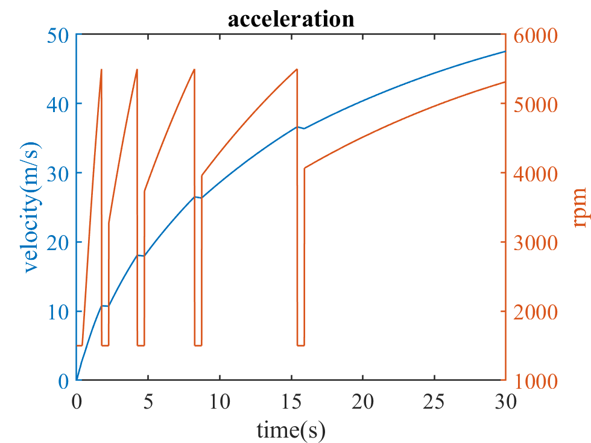
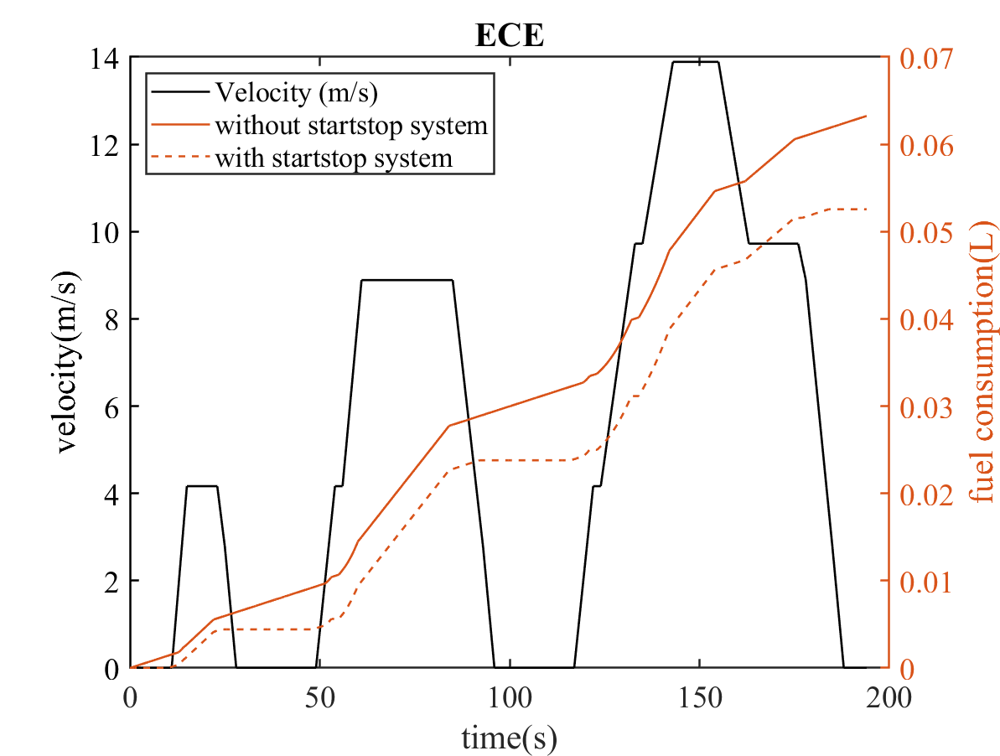
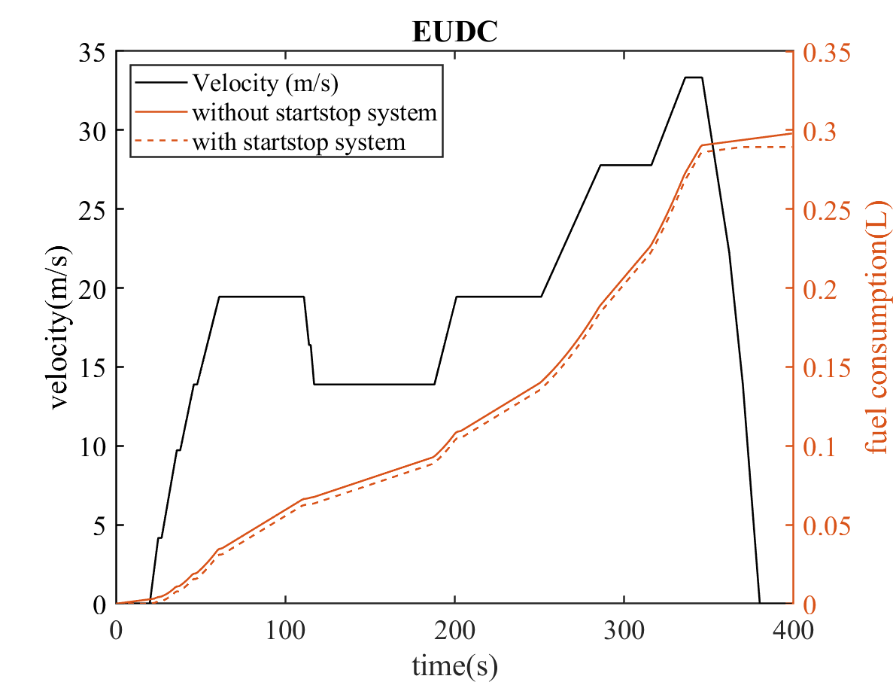
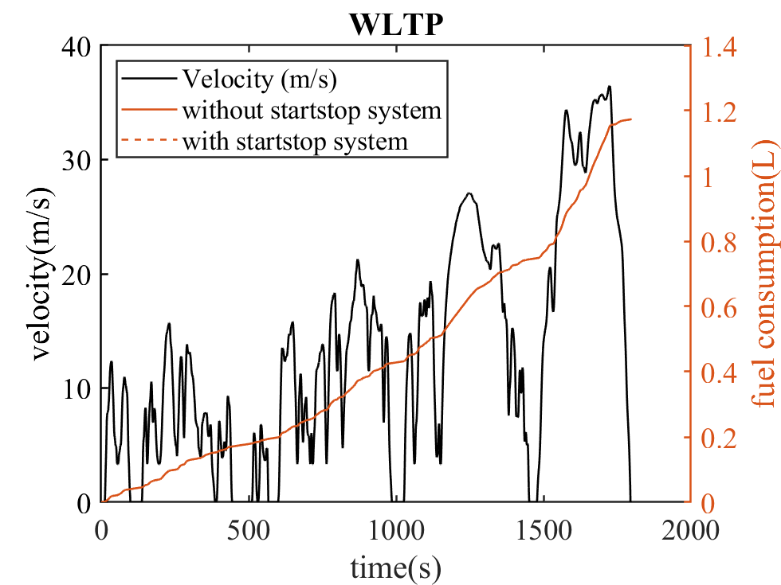
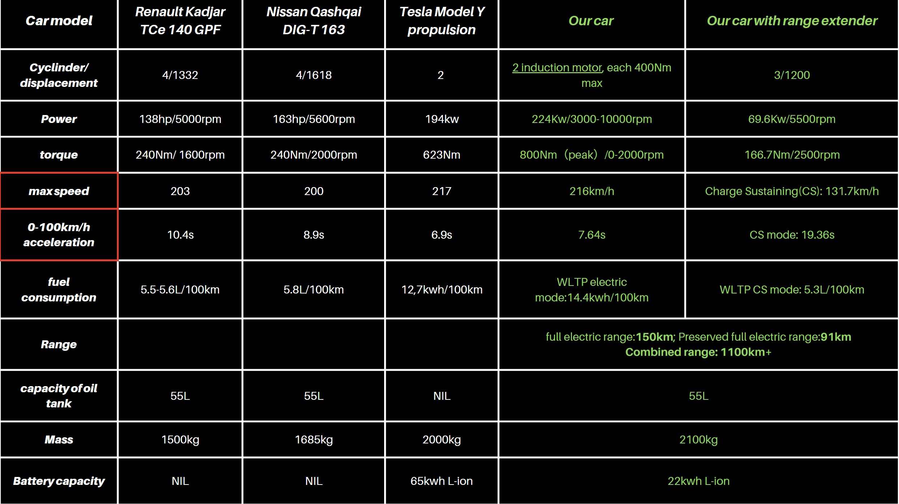
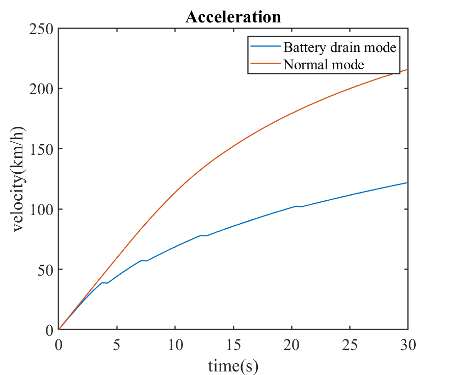
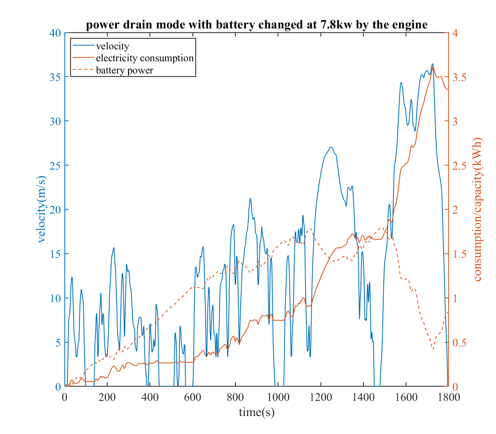

See repo at Repo
Introduction
The code set can evaluate the performance of a car, including its maximum speed, acceleration character, and fuel consumption in various tests (ECE, EUDC, NEDC, WLTP).
Usage
maxspeed.m
In this file, the output will be the maximum speed of your car for the current configuration, and an optimized gear ratio based on the top gear and first gear ratios.
A default engine mapping (for a naturally aspirated engine) has already been included in the code (torque per liter), as well as other engine parameters, such as engine inertia per liter.
For basic usage, you will need to input the displacement of your engine and the mass of the car. For advanced usage, a number of parameters can be changed, including inserting your own engine mapping and frontal area.
remember that the engine mapping should be in torque per litre
%input
displacement=1.2
m_v=2136 %mass of the vehicle
L1=7.05 %first gear ratio L1=v/(rpm/1000)
Crr=8.5 %tire inertial coefficient
SCx=0.65 %frontal area * drag coefficient
slope=0 %driving slop
topgear=5
%engine mapping
rpm_gas=1:0.5:6.5
tor_gas=[77 125 134 139 135 128 122 115 109 102 89 72]
inertial_per_l_gas=0.085 %engine inertial
eta_gb=0.9 %transmission efficiency
rpm=5.5 %Max power rpm
subsequent scripts depend on the parameters in this script
gear_change.m
This script provides the acceleration character of the specified car configuration. The gear change time and idle RPM can be changed in the script.

The gear ratio depends on the L calculated in maxspeed.m. It is possible to re-declare the L at the beginning of the script.
consump.m
A lookup table of fuel consumption (g/kWh) versus BMEP and RPM is included in the script.
The file evaluates the steady-state cruising fuel consumption at 50, 90, and 120 km/h in different gears.
Further fuel consumption tests rely on this table, and you can modify it with your own mapping.
ECE.m

The script evaluates the fuel consumption in ECE test with and without start and stop system for your config.
A L/100km number is give in the command window.
EUDC.m

NEDC.m
NEDC is a combination of ECE and EUDC.
WLTP.m

Instance
We use these basic code to perform the analysis of a EREV design. See code in EREV folder.
Spec of the design is shown as follow:

We are able to perform the analysis of the vehicle using the modified code in EREV folder.

